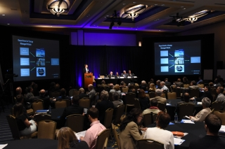
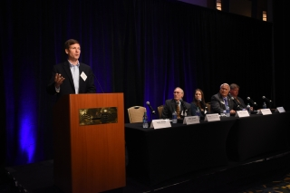
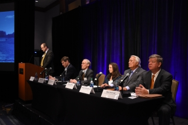
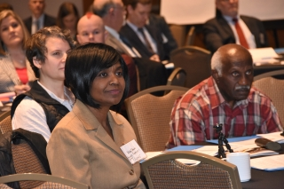
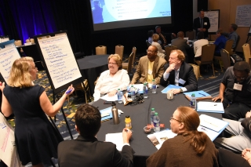
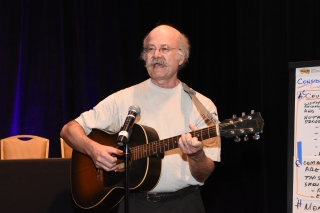
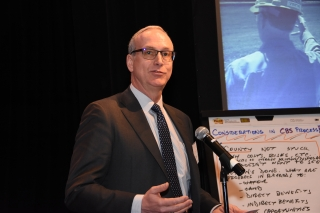

Consent-Based Siting Public Meeting in Atlanta
Meeting Summary
On April 11, 2016, the Department of Energy’s consent-based siting initiative hosted a public meeting in Atlanta, Georgia at the Georgia Institute of Technology’s Conference Center. The purpose of this meeting was to hear from the public and stakeholders on important elements in the design of a consent-based siting process. A consent-based siting process will support the development of facilities needed to manage spent nuclear fuel and high-level radioactive waste, including consolidated interim storage facilities and permanent geologic repositories.
The agenda included a presentation from the Department of Energy’s Acting Assistant Secretary for Nuclear Energy, John Kotek. Mr. Kotek discussed the nuclear energy activities that have brought us to this point, as well as described the Department’s vision for an integrated waste management system and the need for a consent-based approach to siting. This presentation was followed by a panel session with several experts providing diverse perspectives on the primary issues that need to be resolved in the design and implementation of a consent-based process. Participants then had the opportunity to comment or ask questions to the Department and the panelists.
Following this session, participants engaged in facilitated small group discussions on a variety of topics related to consent-based siting and integrated waste management. These small group discussions provided the opportunity for frank and open conversations on key topics that will inform the design of a consent-based process.
The agenda also included a public comment period and two open houses with poster sessions before and after the formal meeting. The open house sessions provided participants with the opportunity to engage in less formal discussions with the Department and other meeting attendees.
Approximately 60 members of the public attended the meeting in person and 40 participants viewed the meeting via webinar.
Keynote and Panel
The meeting began with opening remarks by former Georgia Governor Sonny Perdue. The Governor challenged the Department to develop a sustainable solution that was scientifically sound while meeting the process and political requirements of local, state, and federal stakeholders. The Governor recounted his former experience on a local planning board as a representative example of making siting decisions influenced by multiple stakeholder perspectives. In this context, his advice to the Department was for a transparent and deliberative approach to siting that is fair and based on trusted technical information.

Governor Purdue’s comments were followed by a presentation from John Kotek, Acting Assistant Secretary for Nuclear Energy. Mr. Kotek described the Administration’s integrated waste management strategy as well as reviewed the Department’s approach to developing a consent-based siting process. A copy of Mr. Kotek’s presentation can be found at the bottom of this page.
Following Mr. Kotek’s remarks, the panelists provided their perspectives on consent-based siting and the issues the Department should consider as it moves forward. Panel members included:
- Michael Elliott, Ph.D., Associate Director, Georgia Institute of Technology's Center for Quality Growth and Regional Development
- Mindy Goldstein, Director of the Turner Environmental Law Clinic at Emory University School of Law
- Lauren “Bubba” McDonald, Jr., Georgia Public Service Commission
- Rick McLeod, Savannah River Site Community Reuse Organization
Professor Elliott’s comments focused on his academic and professional experience designing and implementing processes for the consent-based siting of hazardous waste facilities. In particular, Professor Elliott stressed that lasting siting solutions tend to arise from decision-making processes in which stakeholders have adequate representation and access to trusted information sources, and where the decision-making process itself is not overly prescribed but is adaptive to changing circumstances. Professor Elliott suggested that the Department’s consent-based siting initiative reflect these themes.
Following Professor Elliott’s remarks, Ms. Mindy Goldstein offered her thoughts on siting from her perspective as a legal representative to communities engaged with state and federal entities on environmental matters. In this context, Ms. Goldstein’s talk focused on the issue of control and oversight. She suggested that states that host such facilities would require formal regulatory authority over the operation of nuclear waste management facilities. In particular, Ms. Goldstein suggested the federal Nuclear Waste Policy Act be amended to allow for this oversight.
Commissioner Bubba McDonald, Jr. spoke to the issue of consent-based siting and moving ahead with an effective waste management program. Commissioner McDonald’s views were straightforward: that the Department has waited too long to act and there is a clear and present need for a solution. Commissioner McDonald felt the need for a solution to this problem was independent of one’s position on nuclear power and encouraged all interested parties to work together to arrive at a successful outcome.
Mr. McLeod of the Savannah River Site Community Reuse Organization was the final panel speaker. From his perspective as an advocate for research and development efforts associated with nuclear waste management facilities, Mr. McLeod emphasized the need for such R&D initiatives to be considered along with storage and disposal installations. Mr. McLeod also echoed the perspectives of previous speakers in his encouragement of the Department to find a workable solution to meet a pressing need.
Speaker and panelist biographies are included at the bottom of the page.

Facilitated Question and Answer Session
Following the panel presentation, meeting participants asked questions to the panel members (including Mr. Kotek). Panel members engaged with the participants on several issues ranging from transportation of nuclear materials and fairness in siting practices to participation barriers and resource requirements faced by local communities. Additional issues included the relative schedule implications of a consent-based siting initiative when compared to traditional siting practices.

Facilitated Small Group Discussions
After a short break, meeting participants were invited to join in facilitated small group discussions to explore the issues involved in consent-based siting. These discussions were facilitated by independent third-party professional facilitators. Participants formed eight small groups, each consisting of six to ten members of the public. In addition, each group included a note taker and a Department representative. The groups met for approximately one hour and discussed a wide range of issues associated with developing a consent-based siting process. At the end of the one-hour discussion, the facilitator from each table highlighted his or her group’s discussion and reported key observations back to the larger meeting.
Key issues discussed during these small group discussions included, but are not limited to:
- Schedule – The need to act now and how a consent-based process may expedite a solution
- Jurisdiction – The considerations associated with requiring a nuclear utility to operate under a multi-jurisdictional environment
- Transparency and trust – The need for the Department to act in a manner that strengthens relationships with stakeholders and builds trust
- Resource needs – The importance of access to trusted information resources by potential host communities to allow for effective participation, as well as the availability of independent experts representing a range of applicable disciplines
- Transportation – How transportation considerations are factored into the consent-based siting process
A summary report of these small group discussions is included at the bottom of the page.

Public Comment Period
Following the small group discussions, a 30-minute comment period took place to allow members of the public to make statements. These statements included but were not limited to topics such as the need to include underrepresented communities in the consent-based siting dialogue; relative attractiveness of solar and renewables when compared to nuclear power; disproportionately negative effects of radiation on females as opposed to males; and strategic importance of nuclear power to the U.S. economy, a low-carbon footprint, strong safety record, and the industry’s positive history of safely transporting nuclear materials.
Closing Remarks
Following the public comment period, Mr. Andrew Griffith, Associate Deputy Assistant Secretary for Fuel Cycle Technologies, offered closing remarks in which he thanked the audience for their active and thoughtful participation and reinforced the Department’s commitment to stakeholder engagement as it moves forward with the consent-based siting process.
Thank you to all who participated!